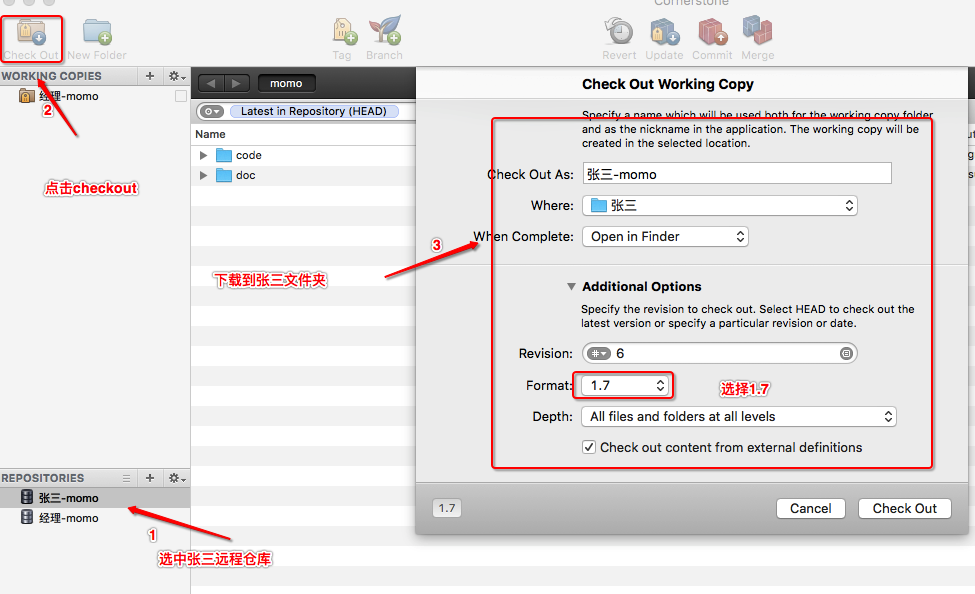
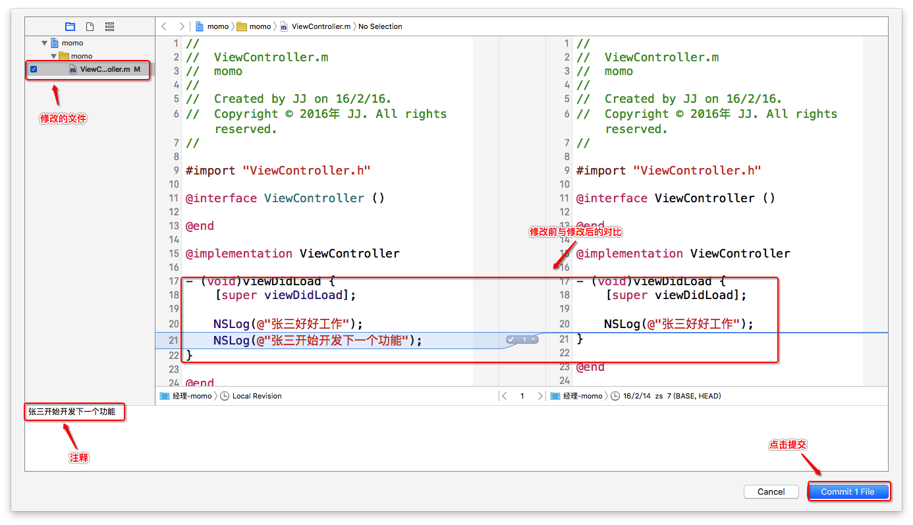
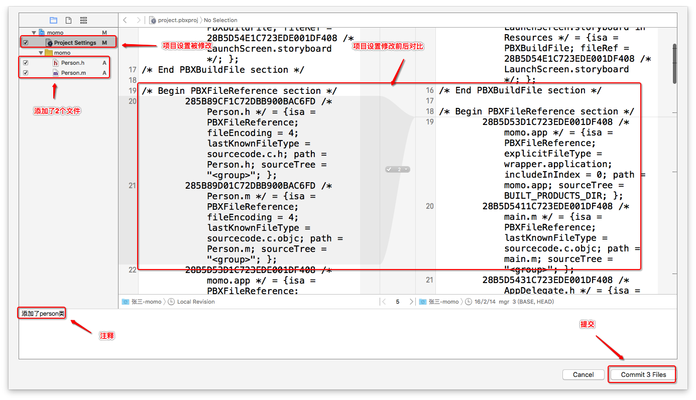
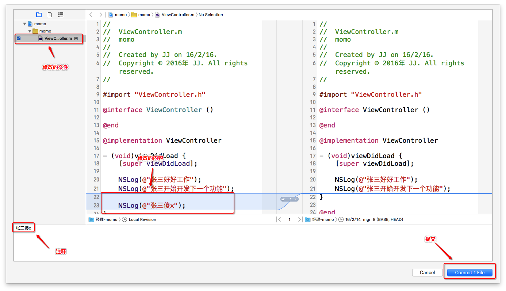
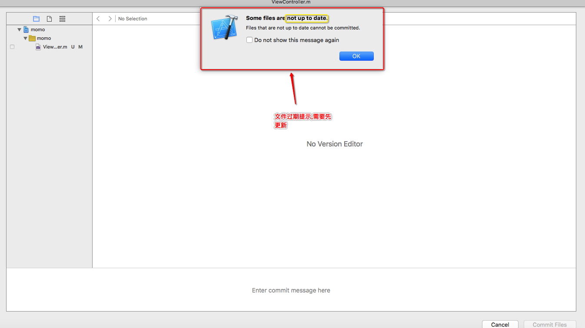
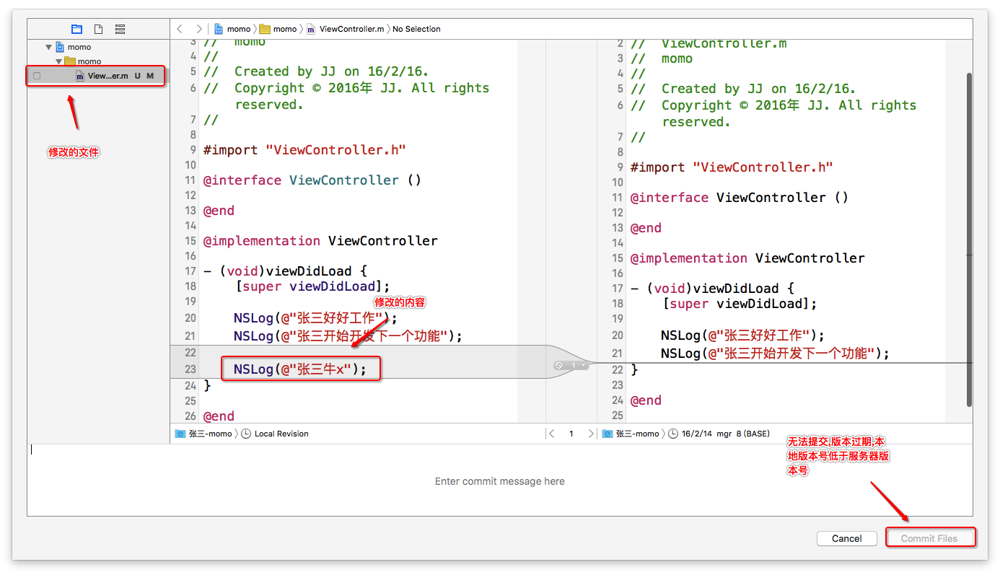
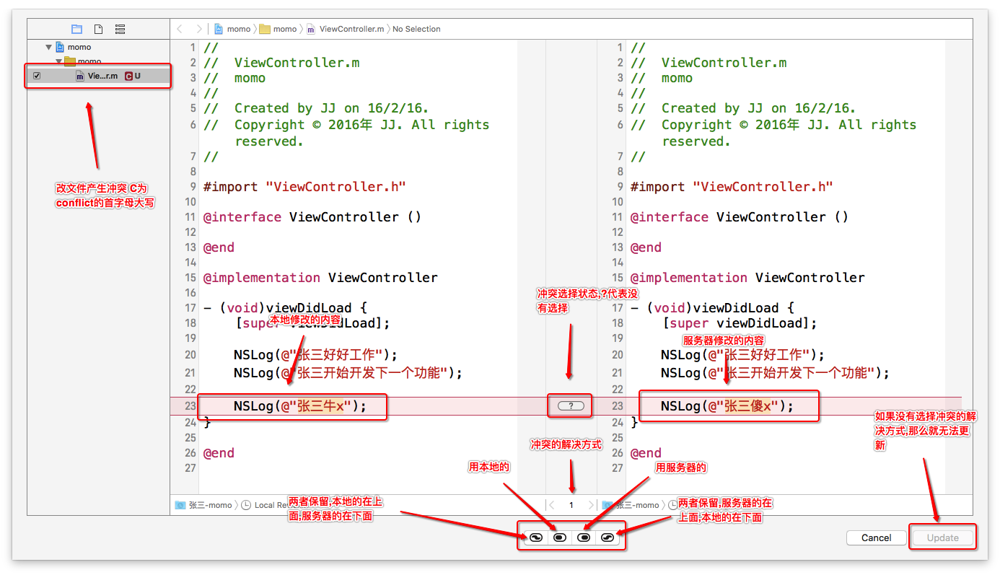
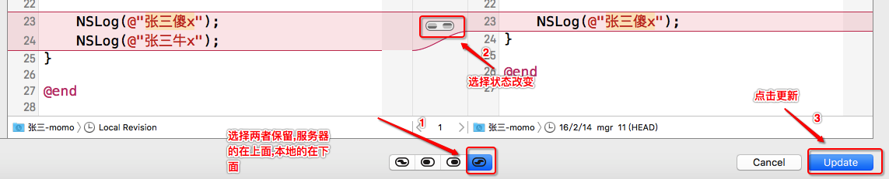

- 一.张三加入开发准备工作
1.在图形化界面添加张三的远程仓库

2.使用图形化界面工具将服务器完整的内容下载到本地

- 二.张三与项目经理使用xcode进行多人开发
1.张三开发
在viewcontroller中打印"张三好好工作"并提交到服务器(source control -> commit)

2.经理开发
1.经理更新服务器最新的代码(source control -> update)
2.经理在viewcontroller中打印"张三开始开发下一个功能并提交到服务器"(source control -> commit)
3.张三开发
1.张三更新服务器最新的代码(source control -> update)
2.张三创建person类到项目中,并提交到服务器,发现创建两个文件,而要提交三个文件,因为xcode文件被project setting(项目配置管理),多了两个文件相当于修改了项目设置
4.经理开发
1.经理更新服务器最新的代码(source control -> update)
2.经理将person.h的位置移个位置,之后出现project setting文件被修改,只要改变了目录结构那么也相当于修改了项目设置

- 三.xcode演示产生代码冲突与解决冲突
1.经理开发
经理在viewcontroller中打印"张三傻x",之后提交到服务器(source control -> commit)
2.张三开发
1.张三在viewcontroller中的同一行打印"张三牛逼",之后提交到服务器(source control -> commit),提交失败报not up to date:过期,另外也不能点击commit,需要先更新

 2.张三更新服务器代码到本地(source control -> update),发送冲突
 3.张三解决冲突张三选择两者都保留,之后点击update
 4.将解决冲突后的代码提交到服务器(source control -> commit)

4.经理开发
将服务器最新的代码更新到本地(source control -> update)
- 四.总结:
1.目录打开情况不需要共享,目录结构需要共享(比如某些文件在某个文件夹等)
2.xcode中产生冲突一般报not up to date(过期)的错误信息,而命令行报out of date(过期)的错误信息
3.xcode解决冲突方案
1.两者保留本地在上,服务器在下
2.两者保留服务器在上,本地在下
3.保留本地代码
4.保留服务器的代码